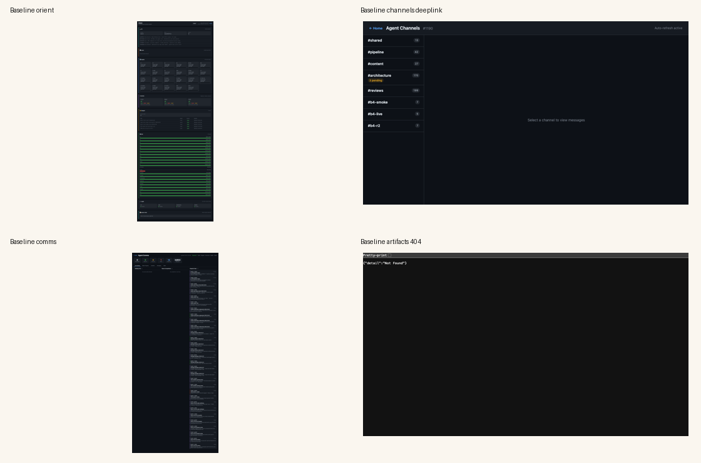
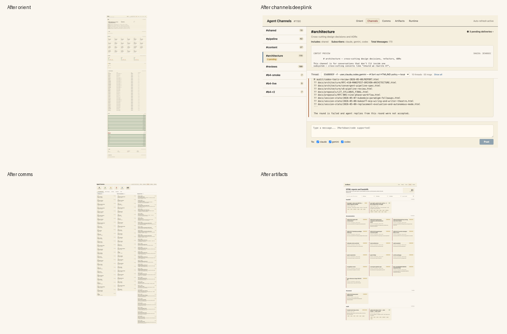
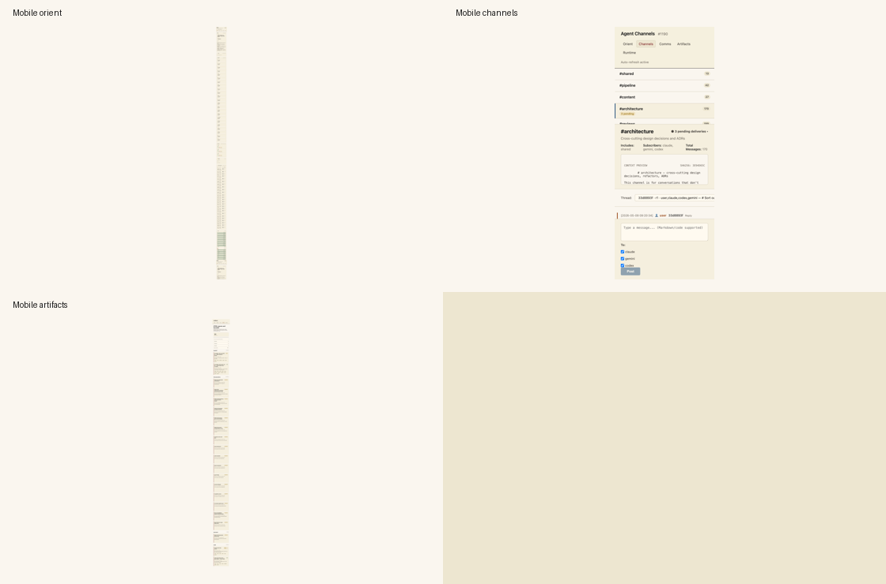

curl -s -w '\nHTTP:%{http_code} TIME:%{time_total}\n' http://localhost:8765/api/health
# HTTP:200 TIME:0.003544
curl http://localhost:8765/artifacts/
# HTTP:404 TYPE:application/json TIME:0.002048
curl http://127.0.0.1:8767/artifacts/
# HTTP:200 TYPE:text/html; charset=utf-8 TIME:0.002858
.venv/bin/python -m pytest tests/test_docs_router.py tests/test_discussions_router.py tests/test_monitor_ui_contracts.py tests/test_playground_api_stability.py -q
# 26 passed in 3.29s| Page | Baseline verdict | Evidence | After-state |
|---|---|---|---|
/orient.html |
NEEDS-POLISH | Baseline Puppeteer: HTTP 200, load 1047ms, one favicon 404 console error, no active-discussion widget. Screenshot: screenshots/baseline-contact.png. |
After Puppeteer: HTTP 200, 1932ms, no request failures, 25 discussion rows, 5 nav links. Screenshot: screenshots/after-contact.png. |
/channels.html |
NEEDS-POLISH | Baseline DOM check on ?channel=architecture&thread=33d8893f: active channel null, main panel hidden, message count 0. |
After DOM check: active channel #architecture, thread value expanded to 33d8893f8f4d44f0b47a0833f61c806e, message count 6, URL updated via history.replaceState. |
/comms.html |
NEEDS-POLISH | Baseline Puppeteer: HTTP 200, load 589ms, no console errors or request failures. Visual style did not match the new HTML report direction. | After Puppeteer: HTTP 200, 620ms, no console errors or request failures, shared parchment nav present. |
/artifacts/ |
BROKEN | Baseline curl: /artifacts/ returned HTTP 404; /files/ returned JSON, proving the docs router was mounted at the wrong public prefix. |
After curl: /artifacts/ returns HTML; /api/artifacts/html?class=handoff returns 2 handoff artifacts; after browser state found 21 cards. |



GET /api/discussions/active, the orient active-discussions widget, and shareable channels.html?channel=&thread= deep links.GET /api/artifacts/html metadata listing and a parchment browse UI at /artifacts/.playgrounds/monitor.css and shared nav across orient/channels/comms/artifacts.The live database classified the issue-triggering 33d8893f... discussion as timed_out during this run because its last message was more than 30 minutes old when the endpoint was queried. The endpoint still surfaces it with status, and the deep link opens the thread deterministically.